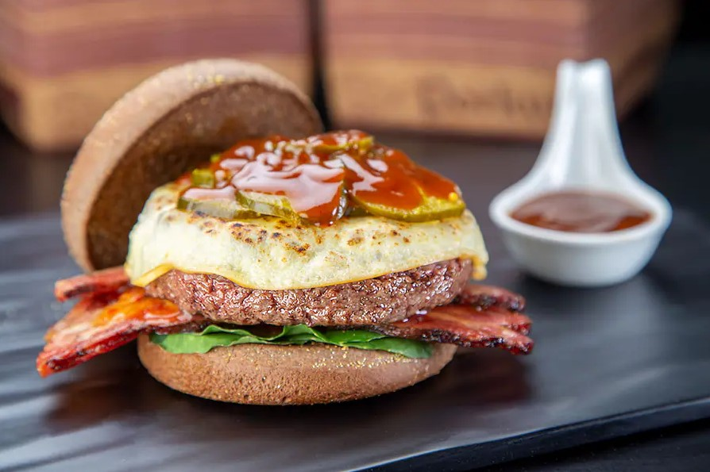
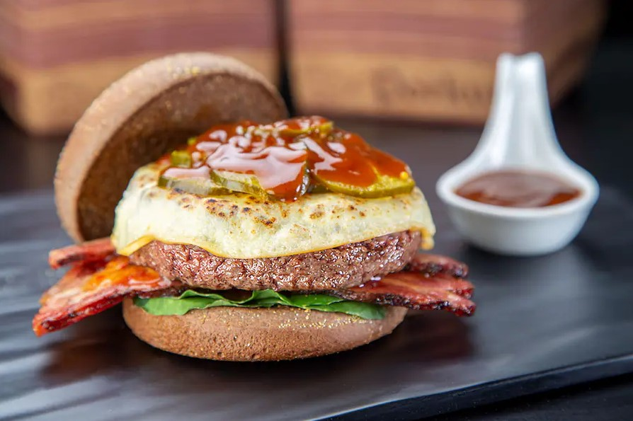

Com certeza um dos lanches mais populares do mundo ocidental. Todos conhecem ou já provaram algum hamburguer na vida. Tamanha popularidade fez crescer empresas como McDonalds e Burguer King, dentre outras, que se tornaram verdadeiras dominadoras no mercado mundial de pão - carne - queijo - pão. Porém, nos tempos mais recentes houve uma valorização nos lanches preparados artesanalmente, o que fez explodir o fenômeno das humburguerias gourmets.
Seu preparo é bem simples na prática. Um hambúrguer é um sanduíche que consiste em um ou mais hambúrgueres cozidos de carne moída, geralmente carne bovina, colocados dentro de um pão ou pão fatiado. O hambúrguer pode ser frito, grelhado, defumado ou grelhado. Porém não se engane, os hamburgueres podem ser preparados utilizando os mais diversos ingredientes e técnicas diferentes, conferindo à cada restaurante algo de único no produto final.
Tradicional
O básico do básico, literalmente pão, carne, queijo e pão. Alguns restaurantes ainda adicionam molho ou picles algumas vezes.
 O básico do básico.
O básico do básico.
Variações
Há várias maneiras de se fazer um hamburguer, desde dos smasheds, os com dois, três ou mais hamburgueres, com um queijo inteiro no meio, ou qualquer outro ingrediente. É justamente isso que dá a mágia desse tipo de lanche.
Outro fator que é interessante são os mais diversos tipos de nomes que batizam os lanches, quanto mais inusitado melhor. Um exemplo bem interessante são os lanches do Porkys, entre nomes como "Portuga" até "O chato do jota".
 Hamburguer que ilustra a publicação, do restaurante Porkys, cujo nome é Clarinha.

Hamburguer do Porkys, o famoso "O chato do jota".
Hamburguer que ilustra a publicação, do restaurante Porkys, cujo nome é Clarinha.

Hamburguer do Porkys, o famoso "O chato do jota".